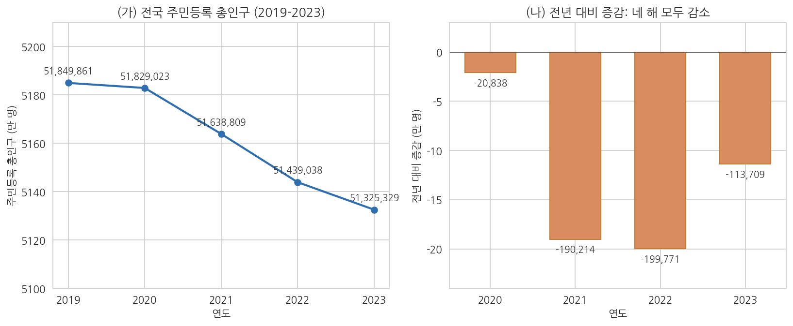
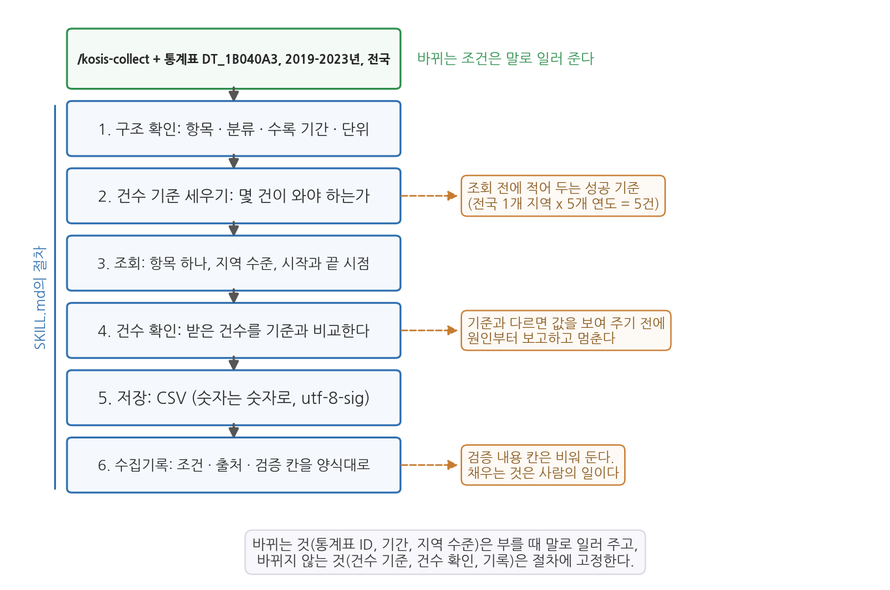

6주차 2회차. kosis MCP로 데이터 찾고 수집하기
최종 수정: 2026-09-05 · 이 교재는 학기 중에도 계속 업데이트됩니다
이 실습에서 하는 것
1회차에서 공공데이터의 지도(어디에 있나), 받기 전에 읽을 것(형식·메타데이터·이용허락), 그리고 에이전트에 도구를 꽂는 표준(MCP)을 배웠다. 이번 실습은 그 지도를 들고 실제로 길을 나선다. 전반부에서는 포털과 에이전트의 웹 검색으로 데이터를 찾는 연습을 하고, 후반부에서는 kosis MCP 서버를 주소 한 줄로 등록해 에이전트가 KOSIS 통계를 직접 검색·수집하게 만든다. 수집은 같은 통계표에서 두 번 한다. 2023년 시도별 총인구(한 시점, 여러 지역)와 전국 총인구의 2019-2023년 추이(한 지역, 여러 시점)다. 수집한 값은 포털 화면과 대조해 검증하고, CSV와 수집기록으로 남기며, 4주차에 만든 csv-profile 스킬로 첫 진단까지 마친다. 마지막으로 두 번 반복한 수집 절차를 4주차에서 배운 방식대로 스킬 하나에 굳혀, 다음 데이터부터는 통계표와 조건만 말해 주면 같은 순서가 그대로 돌아가게 만든다.
오늘이 이 과목에서 특별히 중요한 이유가 하나 더 있다. 실습 마지막에 여러분 각자의 학기 프로젝트 주제와 데이터를 정한다. 오늘 정한 주제는 7주차(정제), 9주차(EDA), 10주차(통계 분석), 13주차(파이프라인), 14주차(최종 보고서)에서 계속 같은 데이터로 이어진다. 오늘의 선택이 한 학기 분석의 출발점이다.
이 실습이 끝나면 다음 산출물이 남는다.
- 포털·에이전트 병행 검색으로 찾은 데이터 후보 목록
- 에이전트에 등록된 kosis MCP 서버 (
/mcp로 확인 가능한 상태) data/sido_pop_2023.csv: MCP로 수집한 17개 시도의 2023년 주민등록 총인구data/korea_pop_2019_2023.csv: 전국 주민등록 총인구의 2019-2023년 추이수집기록.md: 언제, 어디서, 어떤 조건으로 받았고 어떻게 검증했는지의 기록 (수집 2건)산출물/프로파일_sido_pop_2023.md: 4주차 스킬로 만든 첫 진단 보고서.claude/skills/kosis-collect/: 오늘의 수집 절차를 굳힌 스킬 (SKILL.md와 참조 파일)- 학기 프로젝트의 주제와 데이터 결정 (주제 한 문장, 분석 질문, 쓸 데이터)
준비물
| 구분 | 내용 |
|---|---|
| 폴더 | 1주차에 만든 공공데이터분석 폴더 (3주차에서 uv 환경을 갖춘 상태) |
| 데이터 | 실습 중 kosis MCP로 직접 수집 (별도 준비 없음) |
| 도구 | VSCode + Claude Code, 웹 브라우저 (포털 탐색·검증용), 계산기 (2.6의 손 검산용) |
| 선수 내용 | 6주차 1회차 (포털 지도, 메타데이터, MCP), 4주차 2회차 (csv-profile 스킬 만들기), 2주차 (도구 호출 로그 읽기, 지시문의 검증 손잡이) |
2.1 포털에서 데이터 찾기: 사람의 탐색 + 에이전트의 웹 검색
무엇을 왜 하는가. 데이터 찾기는 두 경로를 병행할 때 가장 빠르다. 첫째 경로는 사람의 탐색이다. 브라우저로 1회차의 포털들을 직접 열어 검색하는 것으로, 포털의 분류 체계와 메타데이터 화면을 눈으로 익힐 수 있고 "검색하다 우연히 발견하는" 수확이 있다. 둘째 경로는 에이전트의 웹 검색이다. 에이전트에게 주제를 주고 관련 데이터셋을 찾아 오게 하면, 여러 포털을 한꺼번에 훑어 후보 목록을 만들어 준다. 사람은 넓게 감을 잡고, 에이전트는 빠르게 후보를 모으고, 최종 확인은 다시 사람이 한다.
먼저 사람의 탐색부터 해 보자. 브라우저에서 공공데이터포털(data.go.kr)을 열고, 관심 있는 생활어 키워드(예: "어린이집", "무더위쉼터", "청년")로 검색해 보라. 결과 목록에서 데이터셋 하나를 골라 상세 화면으로 들어가서, 1회차에서 배운 메타데이터 항목들(제공 기관, 수정일, 갱신 주기, 이용허락 유형, 파일 형식)이 실제로 어디에 표시되는지 찾아보라. 같은 키워드를 KOSIS(kosis.kr)에서도 검색해서, 두 포털의 성격 차이(개별 기관의 개방 파일 vs 정리된 승인통계)를 몸으로 비교해 본다.
다음은 에이전트의 웹 검색이다.
"나는 '지방 소멸과 청년 인구 유출'을 주제로 시군구 단위 분석을 해 보려는 행정학과 학생이야. 웹 검색으로 이 주제에 쓸 수 있는 한국 공공데이터셋 후보를 5개 안팎으로 찾아 줘. 후보마다 (1) 데이터셋 이름, (2) 제공 포털과 기관, (3) 파일 형식 또는 API 여부, (4) 시군구 단위인지, (5) 확인한 페이지 링크를 표로 정리해 줘. 확실하지 않은 항목은 추측하지 말고 '확인 필요'라고 적어 줘."
예상되는 에이전트의 행동과 결과. 에이전트가 웹 검색 도구를 여러 번 호출하면서(승인 요청이 올 수 있다) 공공데이터포털, KOSIS 등의 페이지를 확인하고, 요청한 다섯 항목이 채워진 후보 표를 만들어 준다. 결과 표는 대략 다음과 같은 모양이다. 후보의 내용은 실행할 때마다 조금씩 다르므로 표의 꼴만 보면 된다.
| 후보 | 데이터셋 | 포털·기관 | 형식·API | 시군구 단위 | 링크 |
|---|---|---|---|---|---|
| 1 | 주민등록 인구통계(행정구역별) | KOSIS · 행정안전부 자료 | 화면 다운로드, 오픈API | 예 | (에이전트가 적은 주소) |
| 2 | 국내인구이동통계(시군구 전입·전출) | KOSIS · 국가데이터처 | 화면 다운로드 | 확인 필요 | (에이전트가 적은 주소) |
| 3 | 지방자치단체 재정자립도 | 지방재정365 · 행정안전부 | 엑셀 다운로드 | 확인 필요 | (에이전트가 적은 주소) |
"확인 필요"가 섞여 있다면 좋은 신호다. 모르는 것을 모른다고 말하고 있다는 뜻이다.
표가 나오기까지 화면에서 무슨 일이 있었는지도 함께 보아 두자. 도구 사용 로그를 펼치면 다음과 같은 묶음이 여러 번 이어진다.
[도구 호출] 웹 검색 검색어: "지방 소멸 청년 인구 유출 시군구 데이터"
[결과] 상위 결과 8건의 제목과 주소
[도구 호출] 웹 페이지 읽기 주소: (검색 결과의 포털 페이지)
[결과] 페이지에서 데이터셋 이름, 제공 기관, 파일 형식을 찾음
[도구 호출] 웹 페이지 읽기 주소: (다음 후보의 페이지)
[결과] 페이지를 열지 못함 -> 후보 표에 "확인 필요"로 표시
읽는 법은 간단하다. 한 묶음은 도구 이름, 도구에 넘긴 조건(검색어나 주소), 돌아온 것의 요약 세 줄이다. 2주차에서 도구 호출 로그 읽는 법을 배운 이유가 여기서 드러난다. 후보 표의 어느 줄이 실제로 페이지를 열어 확인한 것이고 어느 줄이 검색 결과 제목만 보고 적은 것인지는, 표가 아니라 로그를 펼쳐야 갈린다. 세 번째 묶음처럼 페이지를 열지 못한 자리가 있으면 그 후보의 링크는 잠시 뒤 검증에서 가장 먼저 눌러 볼 대상이다.
검증. 이 단계의 검증이 오늘 전반부에서 가장 중요하다. 에이전트가 준 링크를 하나도 빠짐없이 브라우저에서 직접 클릭해 열어 본다. 실제로 해 보면 세 가지 경우를 만난다. (1) 링크가 정상이고 설명과 일치한다. (2) 페이지는 열리지만 내용이 설명과 다르다(예: 시군구 단위라고 했는데 실제로는 시도 단위다). (3) 링크가 아예 열리지 않거나 엉뚱한 곳으로 간다. 웹 검색 결과를 조합하는 과정에서 에이전트는 오래된 주소를 가져오거나, 그럴듯한 주소를 지어내기도 한다. 2주차에서 본 "확인할 수 없는 답"이 링크의 형태로 나타나는 것이다. (2)나 (3)이 하나라도 나오면 그 후보는 목록에서 빼거나 데이터셋 이름으로 포털에서 직접 다시 찾는다. 이런 불확실성이야말로, 잠시 뒤 MCP처럼 원천에 직접 연결된 통로가 필요한 이유이기도 하다.
2.2 kosis MCP 등록하고 연결 확인하기
무엇을 왜 하는가. 이제 1회차 1.5절에서 배운 등록을 실제로 한다. kosis MCP 서버는 KOSIS의 통계를 검색·조회하는 도구들을 에이전트에게 더해 주는 시범서비스로, 인증키 발급도 회원가입도 필요 없이 주소만으로 등록된다.
등록 전에 1회차의 신뢰 점검을 그대로 적용해 보자. ① 운영 주체: 수업에서 안내한, 국가통계포털(KOSIS) 기반으로 운영되는 실습용 시범서비스다. ② 기능 범위: 통계를 검색하고 조회하는 읽기 전용 도구들이다. 내 파일을 고치거나 지우는 능력은 없다. ③ 필요성: 오늘 수집 실습의 핵심 도구다. 세 점검을 통과했으니 꽂는다.
등록도 이 과목의 방식대로 에이전트에게 시킨다. 등록 명령(claude mcp add)은 터미널 명령이지만, 터미널을 다루는 것이야말로 에이전트의 일이다(2주차). 대화창에 다음과 같이 지시한다.
"kosis MCP 서버를 등록해 줘. 원격 HTTP 서버이고, 이름은 kosis, 주소는 https://kosismcp2026.vercel.app/api/mcp 야. claude mcp add 명령으로 등록하고, 실행한 명령과 결과 메시지를 그대로 보여 줘."
예상되는 에이전트의 행동과 결과. 에이전트가 터미널에서 다음 한 줄을 실행한다. 실행 전에 승인 요청이 뜨는데, 3주차에서 기른 승인 기준을 그대로 적용하자. 명령 속 주소가 내가 알려 준 바로 그 주소인지 읽고 승인한다.
claude mcp add --transport http kosis https://kosismcp2026.vercel.app/api/mcp
터미널에 서버가 추가되었다는 확인 메시지가 나온다. 문구는 버전마다 조금 다르지만 서버 이름과 주소, 등록 범위(따로 지정하지 않으면 이 프로젝트에서 나만 쓰는 범위)가 함께 표시되고, 에이전트가 "새 세션부터 인식된다"는 설명을 덧붙인다. 새로 등록한 서버는 새 세션부터 인식되므로 Claude Code를 재시작한다(4주차에서 스킬 폴더를 새로 만들었을 때와 같다). 그다음 대화창에 /mcp를 입력하면 등록된 서버 목록에 kosis가 보이고, 연결 상태와 이 서버가 제공하는 도구들을 확인할 수 있다. 화면 구성은 버전마다 다르지만 대체로 다음과 같은 정보가 보인다.
MCP 서버
kosis 연결됨 http https://kosismcp2026.vercel.app/api/mcp
kosis 서버의 도구 (일부)
kosis_search 통계·통계표 검색
kosis_local_search 지역·지자체 통계 검색
kosis_table_info 통계표의 항목·분류·기간 확인
kosis_get_data 통계값 조회
도구 이름은 서버 개편에 따라 바뀔 수 있고 이 밖에도 몇 개가 더 있지만, 오늘 필요한 것은 찾는 도구(검색), 표의 구조를 읽는 도구(구조 확인), 값을 받는 도구(조회)의 셋이다. 이 이름들이 잠시 뒤 도구 사용 로그에 나타나므로 눈에 익혀 두자.
등록에는 범위가 있다. 1회차 1.5절에서 등록 범위를 지나가며 말했는데, 여기서 한 번 짚고 넘어가야 나중에 "어제는 됐는데 오늘은 안 된다"는 일을 겪지 않는다. MCP 서버 등록은 세 가지 범위 중 하나로 저장된다.
| 범위 | 어디에 남는가 | 언제 고르나 |
|---|---|---|
| local (따로 지정하지 않으면 이것) | 지금 연 프로젝트 폴더에서, 나만 | 이 수업 폴더에서만 쓰는 실습용 서버 |
| project | 프로젝트 폴더의 설정 파일. 폴더를 함께 쓰면 등록도 함께 전달된다 | 조 과제처럼 같은 폴더를 여럿이 나눠 쓸 때 |
| user | 내 계정 전체. 어느 폴더를 열어도 보인다 | 학기 내내 여러 폴더에서 쓰는 서버 |
오늘의 kosis 서버는 학기 프로젝트 폴더에서도, 12주차 실습에서도 쓴다. 그러니 사용자 범위로 옮겨 두면 편하다. 옮기는 일도 에이전트에게 시킨다.
"방금 등록한 kosis 서버가 어느 범위로 등록되었는지 확인해 줘. 그리고 나는 이 서버를 다른 프로젝트 폴더에서도 쓰고 싶으니 사용자 범위로 등록되게 해 줘. 실행한 명령과 결과 메시지를 그대로 보여 주고, 범위가 무엇에서 무엇으로 바뀌었는지 한 줄로 알려 줘."
에이전트가 등록된 서버 목록을 확인하는 명령을 먼저 실행해 현재 범위를 보여 주고, 이어서 범위를 사용자로 지정하는 옵션을 붙여 같은 등록 명령을 다시 실행한다. 화면에는 서버 이름과 주소, 그리고 어느 범위에 저장되었는지가 함께 표시된다. 문구는 버전마다 다르지만 읽을 것은 셋이다. 이름이 kosis인가, 주소가 내가 준 주소인가, 범위가 사용자인가. 재시작한 뒤 다른 폴더를 열어 /mcp를 눌러 보면 kosis가 그대로 보인다. 범위를 옮겼다는 사실이 화면으로 확인되는 순간이다.
등록 다음에 연결 확인이 반드시 오는 이유도 여기서 짚어 두자. 등록 성공은 "주소를 적어 두었다"는 뜻이고 연결됨은 "그 주소에 실제로 서버가 있고 대화가 된다"는 뜻이다. 등록 명령은 주소를 받아 적을 뿐 그 주소에 서버가 있는지 확인하지 않으므로, 주소에 오타가 있어도 등록 자체는 성공한다. 차이는 /mcp 화면에서 드러난다. 그러니 연결이 되지 않을 때 가장 먼저 의심할 것은 서버가 아니라 주소의 오타이며, 화면의 메시지에 주소가 통째로 다시 적혀 있으므로 그것을 내가 준 주소와 한 글자씩 대조하는 것이 첫 걸음이다.
검증. ① 에이전트가 실행한 명령을 눈으로 읽는다. 이름(kosis)과 주소가 지시한 그대로인지 확인한다. ② 재시작 후 /mcp 화면에서 kosis 서버의 상태가 연결됨으로 표시되는지 확인한다. ③ 도구 목록에 검색, 구조 확인, 조회에 해당하는 도구가 보이는지 훑어본다. ④ 등록 범위가 사용자로 바뀌었는지 확인한다. 가장 확실한 확인은 다른 폴더를 하나 열어 /mcp를 눌러 보는 것이다. 거기서도 kosis가 보이면 범위가 옮겨진 것이다. ⑤ 마지막으로 등록 명령의 의미를 자기 말로 설명할 수 있는지 점검한다. kosis는 내가 붙인 별명이고, 주소는 서버의 위치이며, 이 서버는 읽기 전용 통계 도구를 제공한다. 무엇을 꽂았는지 모른 채 꽂는 것이 1회차에서 경고한 가장 나쁜 습관이다.
2.3 통계표 찾고 메타데이터 읽기: 이 표가 내 질문에 맞는가
무엇을 왜 하는가. 1회차 1.2절의 원칙, 곧 숫자보다 메타데이터를 먼저 읽는다는 원칙을 MCP 수집에도 적용한다. 포털 화면으로 받을 때는 항목 선택 창과 시점 선택 창을 지나야 숫자에 닿으므로 메타데이터를 싫어도 보게 되지만, MCP로 받으면 그 화면이 사라지고 숫자만 온다. 편리함의 대가로 "이 숫자가 어떤 표의 어떤 항목인가"를 지나칠 위험이 생기므로, 수집 전에 표를 고르고 읽는 단계를 일부러 따로 둔다. 연습 주제는 "2023년 시도별 주민등록 총인구"다. 결과를 포털 화면과 대조하기 쉬운, 검증 연습에 알맞은 데이터이기 때문이다. 2주차에서 배운 대로 검증 가능한 단위로 쪼개서, 이 단계에서는 값을 받지 않고 "어느 표를 쓸 것인가"만 결정한다.
"kosis MCP의 검색 도구로 '주민등록 인구' 관련 통계표를 찾아서 후보를 3개 이내로 보여 줘. 그중 시도별 총인구를 연도 단위로 조회할 수 있는 표 하나를 골라, 통계표 구조 확인 도구로 (1) 통계표 이름과 ID, 작성 기관, (2) 항목 목록, (3) 분류(지역 구분의 계층), (4) 수록 기간과 주기, (5) 단위를 알려 줘. 아직 값은 조회하지 마. 그 표를 고른 이유와, 이 표로는 답할 수 없는 것이 있으면 함께 적어 줘."
예상되는 에이전트의 행동과 결과. 도구 사용 로그에 검색 도구 호출이 먼저, 구조 확인 도구 호출이 이어서 나타난다. 로그를 펼치면 두 호출의 모양은 다음과 같다.
[도구 호출] kosis_search keyword: "주민등록 인구"
[결과] 통계표 후보 목록. 줄마다 표 이름과 ID가 하나씩
[도구 호출] kosis_table_info 통계표 ID: DT_1B040A3
[결과] 항목 목록 / 분류(행정구역) 목록 / 수록 기간 / 단위
넘긴 조건의 이름은 서버 버전에 따라 조금씩 다르게 표시되지만, 무엇을 넘겼는지는 이렇게 두세 줄로 읽을 수 있다. 검색 도구에는 말(검색어)을 넘기고 구조 확인 도구에는 ID를 넘긴다는 차이를 눈여겨보자. 말은 흔들리고 ID는 흔들리지 않는다는 것이 이 절 끝의 유의 박스에서 다시 짚을 내용이다. 저자가 실제로 수행했을 때 에이전트는 "행정구역(시군구)별 성별 인구수"(통계표 ID DT_1B040A3)를 골랐다. 주민등록인구현황 통계에 속한 표로, 원자료는 행정안전부의 주민등록 자료이고 KOSIS(국가데이터처(옛 통계청) 운영)에 수록되어 있다. 구조 확인 결과는 대략 다음 모양으로 정리되어 온다. 여러분 화면에서 확인해야 하는 값은 ○로 비워 두었다.
[검색] 후보 1. 행정구역(시군구)별 성별 인구수 (DT_1B040A3) <- 선택
후보 2. (다른 주민등록 관련 표)
[구조] 항목: 총인구수(T20), 남자인구수, 여자인구수 단위: 명
분류: 행정구역(시군구)별. 전국 > 시도 > 시군구의 계층
수록 기간: ○○○○년 - ○○○○년 (연도별)
[이유] 시도 수준의 총인구를 연도 단위로 조회할 수 있고, 주민등록 기준이다.
[한계] 주민등록에 없는 거주자(외국인 등)는 포함되지 않는다.
여기서 읽을 것이 셋 있다. 첫째, 항목이다. 총인구수 말고 성별 항목도 있으므로, 조회할 때 총인구수를 지정하지 않으면 남자·여자 값이 섞여 올 수 있다. 둘째, 분류의 계층이다. 표 이름에 "시군구"가 들어 있듯 이 표는 전국, 시도, 시군구를 한 계층 구조로 담고 있고, 우리는 그중 시도 수준만 원한다. 다음 단계에서 이 계층이 실제로 말썽을 일으킨다. 셋째, 기준이다. 주민등록 기준 인구는 인구총조사 기준 인구와 다르다(1회차 1.2절의 첫 확인 항목). 이 셋을 포함해 1회차의 다섯 확인 항목에 이용허락을 더한 여섯 항목으로 "이 표가 내 질문에 맞는가"를 판정한다. 표 6-4가 저자의 판정 결과다.
표 6-4. 통계표 적합성 판정표 (DT_1B040A3, 저자가 확인한 예)
| 확인 항목 | 내 질문에 필요한 것 | 이 표에서 확인한 것 | 판정 |
|---|---|---|---|
| 생산 기관과 원천 | 주민등록 기준 인구 | 행정안전부 주민등록 자료, KOSIS 수록 | 맞음 |
| 기준 시점과 기간 | 2023년, 가능하면 여러 해 | 연도별 수록. 2019-2023년 다섯 해 조회 가능 (2.6에서 확인) | 맞음 |
| 단위와 산식 | 명 단위의 총인구 | 단위 명, 항목 총인구수 (남자+여자) | 맞음 |
| 범위와 분류 | 17개 시도 전체 | 전국 > 시도 > 시군구 계층. 시도 수준만 지정해야 함 | 맞음 (조건부) |
| 갱신 주기와 이력 | 나중에 갱신할 가능성 | MCP 응답에는 없다. KOSIS 화면의 수록 정보에 있다 | 화면에서 확인 |
| 이용허락과 출처 표시 | 보고서 인용 가능 | MCP 응답에는 없다. KOSIS 화면에 공공누리 유형이 있다 | 화면에서 확인 |
검증. 판정표의 근거를 포털 화면에서 확인한다. 브라우저에서 KOSIS에 접속해 통계표 "행정구역(시군구)별 성별 인구수"를 검색해 열고, 항목 선택 창에 총인구수·남자인구수·여자인구수가 있는지, 지역 선택 창이 전국·시도·시군구의 계층인지, 시점 선택 창에서 몇 년부터 고를 수 있는지 눈으로 본다. MCP가 알려 준 구조와 화면이 같아야 한다. 표 6-4의 마지막 두 항목(갱신 주기, 이용허락)은 MCP 응답에 없으므로 이때 화면의 수록 정보에서 함께 읽어 둔다. 한 가지 더. 검색어에 "인구"만 넣으면 에이전트가 인구총조사 계열의 표를 고를 수도 있다. 표 이름에 "주민등록"이 없거나 판정표의 첫 행이 어긋나면 "주민등록 기준의 표로 다시 골라 줘"라고 재지시한다. 표를 잘못 고르면 이후의 모든 숫자가 정확하면서도 틀린 답이 된다.
같은 통계를 찾더라도 검색어를 바꾸면 다른 표가 나온다. "인구"처럼 넓은 말에는 주민등록 계열뿐 아니라 인구총조사 계열이나 장래인구추계 계열의 표가 함께 걸리고, "주민등록 인구"처럼 기준을 못 박은 말은 후보를 줄여 준다. 검색어에 조사 이름이나 기준을 한 마디 넣는 것이 검색 범위를 좁히는 가장 싼 방법이다. 검색어는 사람이 기억하기 쉬운 대신 결과가 흔들리고, 통계표 ID(DT_1B040A3)는 외우기 어려운 대신 언제나 같은 표를 가리킨다. 그래서 한 번 찾은 표는 이름이 아니라 ID로 부르고, 수집기록에도 ID를 반드시 남긴다. 2.5의 수집기록에 통계표 이름과 ID를 함께 적는 칸이 있는 이유이며, 2.8에서 만들 스킬에 검색어가 아니라 ID를 일러 주는 이유이기도 하다. 검색은 처음 한 번이고, 그다음부터는 ID다.
2.4 MCP로 통계 수집하기: 2023년 시도별 총인구
무엇을 왜 하는가. 표를 골랐으니 값을 받는다. 2.3에서 표를 정하고 여기서 값을 받도록 나눈 것은, 무엇이 틀렸을 때 어느 단계가 틀렸는지 가려내기 위해서다. 먼저 "제대로 받아지는가"만 확인하고 저장은 다음 절에서 잇는다.
"kosis MCP를 써서 2023년 시도별 주민등록 총인구를 수집해 줘. (1) 통계표는 2.3에서 확인한 '행정구역(시군구)별 성별 인구수'(DT_1B040A3)를 쓰고, 다른 표를 써야 한다면 이유를 먼저 말해 줘. (2) 그 통계표에서 전국과 17개 시도의 총인구수를 조회해 표로 보여 줘. (3) 값의 출처(통계표명과 KOSIS 링크)도 함께 남겨 줘. 아직 파일로 저장하지는 마."
예상되는 에이전트의 행동과 결과. 도구 사용 로그에 kosis 서버의 조회 도구 호출이 나타난다(승인 요청이 올 수 있다). 저자가 이 실습을 실제로 수행했을 때, 에이전트는 통계표 DT_1B040A3에서 2023년 총인구수를 조회 도구로 받아 왔다. 결과는 전국과 17개 시도, 합해서 18건이며 단위는 명이다. 로그에서 조회 호출 하나를 펼치면 다음과 같이 보인다.
[도구 호출] kosis_get_data
통계표: DT_1B040A3
항목: 총인구수
분류: 행정구역(시군구)별 - 시도 수준
기간: 2023년 - 2023년
[결과] 18행. 앞의 세 줄은 다음과 같다
전국 2023 51325329
서울특별시 2023 9386034
부산광역시 2023 3293362
여기서 두 가지를 눈에 담아 두자. 첫째, 도구에 넘긴 조건이 네 줄로 보인다는 점이다. 통계표, 항목, 분류, 기간이며 2.3에서 읽은 메타데이터가 그대로 조건이 되었다. 무엇이 잘못되었을 때 어디를 고쳐야 하는지는 이 네 줄을 보면 알 수 있고, 잠시 뒤 검증에서 실제로 그렇게 한다. 둘째, 돌아온 값은 쉼표 없는 숫자라는 점이다. 51325329처럼 오는 값에 사람이 읽기 좋은 쉼표를 붙이는 것은 에이전트가 표로 정리하면서 하는 일이다. 파일에 저장할 때는 다시 쉼표 없는 숫자여야 한다는 것을 2.5에서 다룬다. 대화창에 정리되어 나오는 표의 첫 부분은 다음과 같은 모양이 된다.
| 지역 | 총인구수 (2023, 명) |
|---|---|
| 전국 | 51,325,329 |
| 서울특별시 | 9,386,034 |
| 부산광역시 | 3,293,362 |
| ... | ... |
표 아래에 통계표명과 KOSIS 링크가 붙고, 응답 첫머리에는 아래 유의 박스의 안내문이 붙는다. 6주차 1회차에서 배운 MCP의 약속이 여기서 눈에 보인다. 인증키를 발급받지 않았고, API 문서를 읽지 않았고, 수집 코드를 짜지 않았다. 에이전트가 도구를 골라 쓰는 것을 지켜보고, 결과를 검증하는 것이 사람의 일이다.
kosis MCP를 쓴 답변에는 "시범서비스 안내"라는 문구와 통계표 출처 링크가 함께 붙는 것을 보게 된다. MCP 서버는 데이터만 주는 것이 아니라 그 데이터를 다루는 안내와 지시도 에이전트에게 함께 전달할 수 있고, 에이전트는 그것을 따른다. 지금처럼 출처를 밝히고 한계를 고지하는 안내라면 반가운 일이지만, 뒤집어 생각하면 1회차의 경고 그대로다. 신뢰할 수 없는 서버가 이 통로로 나쁜 지시를 흘려 넣을 수도 있다. 서버를 가려 꽂아야 하는 이유를 실물로 확인해 두자. 덧붙여 이 안내문의 출처 링크와 한계 고지는 수집기록의 재료이기도 하다.
검증. 세 가지를 본다. 앞의 둘은 에이전트가 틀리는 장면을 잡아내는 검증이다.
① 도구 사용 로그에 kosis 도구 호출이 실제로 있는지 확인한다. 로그에 도구 호출 없이 답이 바로 나왔다면 에이전트가 MCP 대신 기억으로 답한 것이다. 2주차에서 본 확인할 수 없는 답을 받은 셈이므로, "기억으로 답하지 말고 반드시 kosis MCP 도구로 조회해서 답해 줘"라고 재지시한다.
② 건수가 설명되는지 본다. 전국 1건 + 시도 17건 = 18건인가. 시도가 15개나 20개로 나왔다면 어딘가 새거나 겹친 것이다. 이 단계의 가장 흔한 틀림이 여기서 드러난다. 2.3에서 본 분류의 계층 때문에, 시도 수준을 따로 지정하지 않으면 시군구 행이 함께 따라온다. 화면에는 전국, 서울특별시 다음 줄부터 "서울특별시 종로구", "서울특별시 중구"가 이어지고 표가 수백 행으로 늘어난다. 에이전트는 이것을 실패로 여기지 않는다. 조회는 성공했고 값도 모두 진짜이기 때문이다. 틀린 것은 값이 아니라 범위이고, 그것을 알아채는 것은 "18건이어야 한다"는 기준을 미리 세워 둔 사람뿐이다. 발견했으면 다음과 같이 재지시한다.
"방금 결과에 시군구 행이 섞여 있어. 같은 통계표에서 지역 분류를 시도 수준으로 한정해서 전국 1건과 17개 시도만 다시 조회해 줘. 결과 건수를 세어 18건인지 보고하고, 18건이 아니면 값을 보여 주기 전에 그 이유를 먼저 말해 줘."
재지시 뒤에는 18건의 표와 "18건입니다"라는 보고가 함께 온다. 이 재지시문에는 2주차의 검증 손잡이가 두 개 들어 있다. 성공 기준(18건)과 이상 상황 보고(아니면 이유부터)다. 처음 지시문에 이 손잡이를 넣어 두었다면 틀림은 일어나지 않았거나 에이전트가 스스로 보고했을 것이다. 다음 단계부터의 지시문에는 처음부터 단다.
③ 17개 시도의 이름이 현재 명칭(강원특별자치도, 전북특별자치도 등)이고 같은 시도가 두 번 나오지 않는지 훑는다. 값의 대조는 다음 절의 일이다.
2.5 수집 결과 검증과 저장: 화면 대조, CSV, 수집기록
무엇을 왜 하는가. 데이터가 왔다. 그러나 2주차의 교훈을 기억하자. 그럴듯함은 옳음의 증거가 아니다. 수집 데이터는 세 겹으로 검증한 뒤에 저장한다. 값 대조, 내적 일관성, 그리고 기록이다. 2주차의 검증 세 층으로 말하면 값 대조는 사람의 눈, 내적 일관성은 지시문의 손잡이(자료에서 직접 계산해 기준과 비교), 기록은 별도 검증의 준비(다른 대화나 다른 사람이 같은 절차로 재현)다.
첫째, 값이 포털 화면과 같은가. 같은 데이터로 통하는 두 개의 문을 검증에 활용한다. MCP라는 문으로 받은 값을, 사람용 문인 KOSIS 웹 화면으로 대조하는 것이다. 브라우저에서 2.3에서 열어 둔 통계표 "행정구역(시군구)별 성별 인구수"로 돌아가, 2023년 서울특별시의 총인구수를 눈으로 확인한다. 저자의 수집 결과에서 이 값은 9,386,034명이었다. 화면의 값과 에이전트가 받은 값이 자릿수 하나까지 같아야 한다. 표본으로 서울 외에 두어 곳(예: 인구가 가장 적은 시도인 세종, 386,525명)을 더 대조하면 좋다. 표본은 틀렸다면 티가 날 곳으로 고른다. 가장 큰 곳(경기), 가장 작은 곳(세종), 이름이 최근에 바뀐 곳(전북특별자치도) 정도면 충분하다.
포털 화면에서 값을 찾는 일이 처음이면 순서가 헷갈리기 쉬우므로, 세 값(전국, 서울, 세종)을 한 번에 확인하는 다섯 걸음으로 정리해 둔다.
- KOSIS(kosis.kr)에 접속해 검색창에 통계표 이름 "행정구역(시군구)별 성별 인구수"를 그대로 넣고 검색한다. 결과 목록에서 이름이 정확히 같은 통계표를 골라 연다. 이름이 비슷한 표가 여럿이면 2.3에서 확인한 통계표 ID(DT_1B040A3)가 함께 표시되는 쪽을 고른다.
- 표가 열리면 화면 위쪽의 조회 설정 영역을 본다. 항목, 행정구역(분류), 시점이 각각 버튼이나 탭으로 나뉘어 있다. 이 셋이 바로 MCP 조회에서 도구에 넘긴 조건에 해당하는 자리다. 화면의 이 영역과 도구 호출의 조건이 하나씩 짝을 이룬다는 사실을 눈으로 확인해 두면, 앞으로 조회 조건을 지시할 때 무엇을 적어야 하는지가 분명해진다.
- 시점에서 2023년 하나만 남긴다. 여러 해가 선택되어 있으면 값이 여러 열로 펼쳐져 대조가 번거롭다.
- 항목에서 총인구수만 남기고(남자인구수와 여자인구수는 해제), 행정구역에서 전국, 서울특별시, 세종특별자치시 셋만 선택한 뒤 조회를 누른다. 여기서 시군구를 함께 선택하지 않는 것이, 앞서 2.4의 검증에서 겪은 계층 문제를 화면 쪽에서 다시 만나는 자리다.
- 화면에 나온 세 값을 에이전트가 받은 값(전국 51,325,329명, 서울 9,386,034명, 세종 386,525명)과 자릿수까지 비교한다. 이때 표 위아래에 적힌 단위 표기와 수록 시점 표기도 함께 읽는다. 값만 맞추고 단위를 흘려 읽으면 뒤에서 숫자가 천 배로 어긋난다.
세 값을 고른 데는 이유가 있다. 전국은 곧이어 시도 합계와 맞춰 볼 기준값이고, 서울은 자릿수가 커서 한 자리만 어긋나도 눈에 띄며, 세종은 가장 작아 다른 지역과 헷갈릴 일이 없다. 셋이 모두 맞으면 나머지 열네 곳도 같은 조회에서 함께 온 값이므로 표본 대조로 전체를 갈음할 수 있다. 반대로 셋 중 하나라도 어긋나면 값 하나의 문제가 아니라 조회 조건의 문제일 가능성이 크다. 그럴 때는 값을 고칠 것이 아니라 어느 조건이 달랐는지부터 찾아야 한다.
둘째, 안에서 아귀가 맞는가. 이 데이터에는 전국 값과 17개 시도 값이 함께 들어 있으므로, 시도를 다 더하면 전국이 되어야 한다.
"방금 받은 17개 시도의 총인구수를 모두 더한 값과, 전국의 총인구수 값을 나란히 출력하고 같은지 비교해 줘. 같으면 시도 데이터를 시도·연도·총인구 세 개 열의 표로 정리해서 data/sido_pop_2023.csv 로 저장해 줘. 총인구는 문자열이 아니라 숫자로, 엑셀에서 열어도 한글이 깨지지 않는 인코딩(utf-8-sig)으로 저장하고, 저장 후 파일의 처음 5행을 출력해 줘. 그리고 시도별 총인구를 큰 순서대로 가로 막대그래프로 그려 산출물 폴더에 저장해 줘. 제목과 축에 단위(만 명)와 연도(2023)를 표시해 줘."
예상되는 에이전트의 행동과 결과. 에이전트가 짧은 파이썬 코드를 만들어 uv 환경에서 실행한다. 도구 사용 로그에는 MCP 호출 대신 코드 실행과 파일 쓰기가 나타난다. 이미 받은 값을 다루는 일이므로 새 조회는 없다. 대화창에는 합계와 전국 값의 비교, 파일의 처음 5행, 그림 저장 보고가 순서대로 온다. 저자의 실행에서 17개 시도의 합은 51,325,329명으로 전국 값과 정확히 일치했다. 저장된 CSV의 첫 다섯 행은 다음과 같았다.
표 6-5. data/sido_pop_2023.csv의 첫 다섯 행 (실제 수집 결과)
| 시도 | 연도 | 총인구 |
|---|---|---|
| 경기도 | 2023 | 13630821 |
| 서울특별시 | 2023 | 9386034 |
| 부산광역시 | 2023 | 3293362 |
| 경상남도 | 2023 | 3251158 |
| 인천광역시 | 2023 | 2997410 |

그림 6-3을 읽어 보자. 가로 막대는 시도별 주민등록 총인구(만 명)이고, 경기(약 1,363만)와 서울(약 939만)이 압도적으로 크며 세종(약 39만)이 가장 작다. 이 그림의 용도는 분석이 아니라 확인이다. 상식과 크게 어긋나는 막대(예: 서울이 광주보다 작다든가, 음수 막대)가 없는지 훑는 것으로, 수집 단계의 마지막 안전망 역할을 한다. 익숙한 데이터일수록 그림 한 장이 표 백 줄보다 이상을 빨리 드러낸다.
틀리는 장면. 단위가 천 명으로 바뀐다. 저장 지시에 "단위를 표시해 줘"를 덧붙이면 엉뚱한 곳에서 탈이 나기도 한다. 에이전트가 CSV의 열 이름을 "총인구(천 명)"으로 붙여 놓고, 값은 51,325,329처럼 명 단위 그대로 넣는 경우다. 그림 축 라벨에도 "천 명"이 붙었는데 눈금 숫자는 만 명 자리다. 값 자체는 진짜이므로 화면만 보아서는 아무 일도 없어 보인다. 이것을 잡아내는 것이 방금 한 화면 대조의 다섯 번째 걸음이다. KOSIS 화면의 단위 표기를 "명"이라고 적어 두었으므로 열 이름의 "천 명"이 그것과 어긋나고, 그림 6-3의 축(만 명)과 표의 열 이름(천 명)이 서로 다른 것도 신호다. 단위는 값이 아니라 이름표에 붙기 때문에, 값을 아무리 대조해도 잡히지 않고 이름표를 읽어야 잡힌다. 발견했으면 다음과 같이 재지시한다.
"CSV 열 이름과 그림 축 라벨의 단위가 KOSIS 화면의 단위(명)와 다르게 붙었어. 파일에는 단위를 바꾸지 말고 명 단위 값을 그대로 두고 열 이름은 '총인구'로 되돌려 줘. 그림에서만 만 명으로 나누어 표시하고 축 라벨에 '만 명'이라고 적어 줘. 그리고 요약 문장에서 큰 수를 줄여 적을 때는 '약'을 붙이고 괄호에 원래 값을 남겨 줘."
재지시 뒤에는 열 이름이 "총인구"로 돌아오고, 요약 문장이 "전국 51,325,329명(약 5,133만 명)"처럼 바뀐다. 표 6-5의 열 이름이 단위 없이 그냥 "총인구"인 이유가 여기에 있다. 파일에는 원래 값을 그대로 두고, 줄여 읽는 일은 사람이 보는 화면과 문장에서만 한다. 7주차에서 이 파일을 다시 열 때, 열 이름 하나가 잘못 붙어 있으면 그때는 되돌릴 근거조차 남아 있지 않다.
셋째, 수집 기록을 남긴다. 1회차에서 메타데이터를 "숫자보다 먼저 읽을 것"이라 배웠다. 이제 여러분이 데이터를 만들었으니, 그 메타데이터를 쓸 차례다. MCP 수집은 코드가 남지 않는 대화형 수집이므로, 기록이 곧 재현의 근거가 된다는 점에서 오히려 더 중요하다.
"프로젝트 폴더에 수집기록.md 를 만들어 줘. 다음 항목을 표로 정리해 줘. 수집일(오늘 날짜), 수집 경로(kosis MCP)와 원자료 작성 기관, 통계표 이름과 ID, 조회 조건(연도·항목·지역 단위), 사용한 도구 호출(어떤 도구를 몇 번), 수신 건수와 구성(전국 1 + 시도 17), 서버 안내문의 출처 링크, 검증 내용(화면 대조 결과, 시도 합계와 전국 값 비교 결과), 저장 파일 경로, 다시 수집할 때 쓸 지시문 전문. 검증 내용 칸은 비워 두면 내가 채울게."
검증 내용 칸을 직접 채우라고 한 데는 이유가 있다. 무엇을 어떻게 대조했고 결과가 어땠는지는 검증한 사람만이 쓸 수 있는 문장이다. "KOSIS 화면에서 서울 9,386,034 일치 확인, 시도 합계 51,325,329 = 전국 값 일치"처럼 구체적으로 쓴다. 이 한 줄이 14주차 최종 보고서에서 "이 숫자의 근거는 무엇인가"라는 질문에 대한 답이 된다. 완성된 수집기록은 표 6-6과 같은 모양이어야 한다. 오른쪽 칸은 오늘 첫 번째 수집을 저자의 결과로 채운 예다.
표 6-6. 수집기록 양식과 기입 예 (수집 1: 2023년 시도별 총인구)
| 항목 | 기록 |
|---|---|
| 수집일 | 수집한 날짜 (예: 2026-08-12, 저자의 수집일) |
| 수집 경로 | kosis MCP (서버 이름 kosis, https://kosismcp2026.vercel.app/api/mcp) |
| 원자료와 작성 기관 | 행정안전부 주민등록인구현황. KOSIS(국가데이터처) 수록 |
| 통계표 | 행정구역(시군구)별 성별 인구수 (DT_1B040A3) |
| 조회 조건 | 항목 총인구수, 지역 전국 + 시도 수준(시군구 제외), 시점 2023년 |
| 도구 호출 | 로그에서 센 대로 (예: 검색 1회, 구조 확인 1회, 조회 1회. 재지시가 있었다면 조회 2회) |
| 수신 건수와 구성 | 18건 = 전국 1 + 시도 17 |
| 서버 안내문 | 시범서비스 안내 확인. 출처 링크: (안내문의 링크를 그대로 옮긴다) |
| 검증 내용 (내가 씀) | KOSIS 화면 대조: 서울 9,386,034 일치, 세종 386,525 일치. 시도 합계 51,325,329 = 전국 값 일치. 그림 6-3에 이상 막대 없음 |
| 저장 파일 | data/sido_pop_2023.csv (17행 3열, utf-8-sig), 산출물 폴더의 막대그래프 |
| 재수집 지시문 | 2.4의 지시문(재지시 손잡이 포함)과 2.5의 저장 지시문 전문 |
검증. ① VSCode에서 data/sido_pop_2023.csv를 열어 헤더 1행 + 데이터 17행인지, 한글이 멀쩡한지 확인한다. 마지막 행 번호가 18이면 맞다. ② 표 6-5의 첫 행(경기도, 13630821)이 파일의 2번째 줄과 같은지, 총인구 값에 쉼표나 따옴표가 섞여 문자열이 되지 않았는지 본다. ③ 수집기록.md의 모든 칸이 채워졌는지, 특히 검증 내용이 자기 문장으로 적혔는지 확인한다. ④ 최종 확인으로 새 대화를 열고, 수집기록에 적어 둔 지시문으로 처음부터 다시 수집해 본다. 같은 18건, 같은 값이 나오면 여러분은 재현 가능한 수집 절차를 갖게 된 것이다. 이것이 2주차에서 배운 새 대화 독립 검산이며, 13주차에서는 이 일을 검증 전담 서브에이전트(verifier)에게 맡긴다. 그때 서브에이전트에게 건네는 지시서의 재료가 오늘의 수집기록이다.
2.6 두 번째 수집: 전국 총인구 2019-2023년 추이와 손 검산
무엇을 왜 하는가. 같은 표에서 조회 조건만 바꿔 한 번 더 수집한다. 지역을 전국 하나로 고정하고 시점을 2019-2023년 다섯 해로 늘린다. 두 번째 수집을 하는 이유는 셋이다. 절차는 두 번째부터 손에 붙는다는 것, 시계열 수집에는 기간 지정이라는 고유한 함정이 있다는 것, 그리고 이 다섯 값을 12주차에서 "우리나라 인구는 감소 추세다"라는 문장의 근거 메모에 다시 쓴다는 것이다. 1회차 1.3절의 "매달 초 갱신" 문제도 여기서 실감할 수 있다. 조건을 기록해 두면 내년에 2024년 값을 덧붙이는 일은 지시문의 숫자 하나를 바꾸는 일이 된다.
"같은 통계표(행정구역(시군구)별 성별 인구수, DT_1B040A3)에서 전국의 총인구수를 2019년부터 2023년까지 연도별로 kosis MCP로 조회해 줘. 시작 시점 2019년, 끝 시점 2023년이야. 연도와 총인구 두 열의 표로 보여 주고, 다섯 해가 모두 있는지 건수를 세어 보고해 줘. 다섯 건이 아니면 값을 보여 주기 전에 이유부터 말해 줘. 증감은 계산하지 말고 값만 보여 줘. 서버가 붙이는 안내문이 있으면 요약하지 말고 원문 그대로 붙여 줘. 저장은 아직 하지 마."
지시문이 2.4보다 길어진 것은 성공 기준(다섯 건), 이상 상황 보고, 계산 금지(증감은 내가 한다), 안내문 원문 요구가 더해졌기 때문이다. 모두 2.4와 2.5에서 겪은 일에서 나온 손잡이다.
예상되는 에이전트의 행동과 결과. 도구 사용 로그에 조회 도구 호출이 나타나고, 저자가 실제로 수행했을 때 결과는 다음과 같았다(단위 명).
| 연도 | 전국 주민등록 총인구 (명) |
|---|---|
| 2019 | 51,849,861 |
| 2020 | 51,829,023 |
| 2021 | 51,638,809 |
| 2022 | 51,439,038 |
| 2023 | 51,325,329 |
표 아래에 "5건입니다"라는 건수 보고와 출처, 첫머리에 시범서비스 안내가 붙는다. 이 단계에서 만나는 틀리는 장면은 셋인데, 셋 다 값이 아니라 값을 둘러싼 형식과 설명에서 생긴다.
틀리는 장면 1. 기간이 잘려 온다. 시작 시점이 도구 호출에 넘어가지 않으면 2023년 한 행만 담긴 표가 오고, 에이전트는 "2023년 전국 주민등록 총인구는 51,325,329명입니다"라고 자신 있게 덧붙인다. 값은 정확하다. 그러나 다섯 건이어야 할 결과가 한 건이다. 위 지시문대로라면 에이전트가 "1건입니다"라고 먼저 보고해야 하고, 손잡이가 없는 지시문이었다면 여러분이 건수를 세어 발견해야 한다. 다섯 해가 아니라 세 해가 오는 변형도 있다. 발견했으면 다음과 같이 재지시한다.
"한 해만 왔어. 조회 도구에 시작 시점을 2019년, 끝 시점을 2023년으로 명시해서 다시 조회해 줘. 도구에 어떤 조건을 넘겼는지 조건 자체도 보여 주고, 결과가 다섯 건인지 세어 보고해 줘."
"도구에 넘긴 조건을 보여 달라"는 요구가 핵심이다. 도구 사용 로그를 펼치면 호출에 담긴 조건(통계표 ID, 항목, 지역, 시작·끝 시점)이 보인다. 두 호출을 나란히 놓으면 무엇이 달랐는지가 한눈에 드러난다.
[처음 호출] kosis_get_data
통계표: DT_1B040A3 / 항목: 총인구수 / 분류: 전국
기간: 2023년 - 2023년 <- 시작 시점에 2023년이 들어갔다
[결과] 1행
[다시 호출] kosis_get_data
통계표: DT_1B040A3 / 항목: 총인구수 / 분류: 전국
기간: 2019년 - 2023년 <- 시작 시점이 제대로 들어갔다
[결과] 5행
바뀐 것은 한 줄, 그중에서도 숫자 네 자리뿐이다. 2주차의 근거 위치 보고를 MCP 호출에 적용한 것으로, 조건이 눈에 보이면 무엇이 빠졌는지 즉시 알 수 있다.
틀리는 장면 2. 안내문이 사라진다. 값은 제대로 왔는데 첫머리의 시범서비스 안내가 없는 경우가 있다. 에이전트가 답을 정리하면서 서버의 안내를 요약하거나 생략한 것이다. 값에는 문제가 없으므로 넘어가기 쉽지만, 안내문의 출처 링크와 한계 고지는 수집기록의 재료다. 2.4의 응답과 비교해 알아챘다면 "서버 응답에 안내문이 있었는지 확인하고, 있었다면 요약하지 말고 원문 그대로 붙여 줘"라고 재지시한다. 응답이 올 때마다 안내문의 유무를 먼저 보는 버릇을 들이자.
틀리는 장면 3. 기준 시점을 자기 말로 채운다. 다섯 값은 정확한데, 표 아래에 "각 연도 12월 31일 기준입니다"라거나 "연중 평균 인구입니다" 같은 설명이 붙는 경우가 있다. 문제는 이 문장이 통계표에서 읽어 온 것이 아니라 에이전트가 일반 지식으로 채운 것일 수 있다는 점이다. 값이 맞으니 그냥 지나치기 쉽지만, 이 한 줄이 그대로 보고서에 옮겨지면 출처 없는 주장이 된다. 발견하는 방법은 2.3에서 배운 원칙 그대로다. 기준은 짐작하는 것이 아니라 표에서 읽는 것이므로, 도구 사용 로그의 구조 확인 결과에 시점 정의가 실제로 있었는지 되짚어 본다. 없었다면 그 설명은 근거가 없다. 다음과 같이 재지시한다.
"표 아래에 적은 기준 시점 설명이 어디서 나온 것인지 알려 줘. 통계표의 수록 정보나 조회 결과에서 확인한 것이면 어느 자리에서 본 것인지 밝히고, 확인하지 못한 것이면 그 문장을 지우고 '기준 시점은 화면에서 확인 필요'라고만 남겨 줘. 추측으로 채우지 마."
대개 에이전트는 확인하지 못했다고 물러서고 문장을 "확인 필요"로 바꾼다. 남은 일은 사람 몫이다. KOSIS 화면의 수록 정보에서 이 표의 기준 시점을 찾아 수집기록에 옮겨 적는다. 2주차에서 배운 "없다고 답할 자리"를 지시문으로 열어 준 셈이며, 그 자리가 열려 있으면 에이전트는 지어내는 대신 비워 둔다. 값이 맞을 때 설명도 맞을 것이라고 넘겨짚지 않는 습관이 여기서 만들어진다.
검증. 이번 검증의 핵심은 손 검산이다. 에이전트에게 증감을 계산하지 말라고 한 이유가 여기에 있다. 여러분이 먼저 계산하고 에이전트의 계산은 나중에 받아 대조한다. 순서를 바꾸면 에이전트의 숫자를 보고 "맞는 것 같다"고 넘어가게 되므로 반드시 손이 먼저다. 계산기로 표 6-7의 빈 칸을 채운다.
표 6-7. 손 검산표 (왼쪽 두 열은 수집 결과, 오른쪽 두 열은 직접 계산)
| 연도 | 총인구 (명) | 전년 대비 증감 (명) | 계산식 |
|---|---|---|---|
| 2019 | 51,849,861 | (기준 해) | |
| 2020 | 51,829,023 | 51,829,023 - 51,849,861 | |
| 2021 | 51,638,809 | 51,638,809 - 51,829,023 | |
| 2022 | 51,439,038 | 51,439,038 - 51,638,809 | |
| 2023 | 51,325,329 | 51,325,329 - 51,439,038 | |
| 2019-2023 누적 | 51,325,329 - 51,849,861 |
다 채웠으면 네 해의 증감을 모두 더한 값이 누적 증감과 같은지, 그리고 네 값이 모두 음수인지 스스로 확인한다. 정답은 손 검산을 끝낸 뒤에만 보라. 저자가 계산한 값은 2020년 -20,838명, 2021년 -190,214명, 2022년 -199,771명, 2023년 -113,709명이고, 누적 증감은 -524,532명이며 네 값의 합과 같다. 2019년 대비 감소율은 약 1.0%다(524,532 ÷ 51,849,861). 네 해 연속 감소했으니 "감소 추세"라는 서술은 이 다섯 값으로 뒷받침된다. 다만 한 해의 감소 폭이 2만 명에서 20만 명까지 열 배 가까이 차이 난다는 점도 읽어 두자. 추세의 방향과 속도는 다른 이야기다.
손 검산이 끝났으면 저장과 그림을 시킨다.
"방금 받은 다섯 해의 값을 연도·총인구 두 열의 표로 data/korea_pop_2019_2023.csv 에 저장해 줘(총인구는 숫자, 인코딩 utf-8-sig). 저장한 뒤 파일을 다시 읽어 전년 대비 증감 열을 계산해 화면에 보여 주되, 파일에는 더하지 마. 그리고 연도별 총인구 선그래프와 전년 대비 증감 막대그래프를 나란히 그려 산출물 폴더에 저장해 줘. 축에 단위(만 명)를 표시하고, 증감 그래프에는 0을 기준선으로 그려 줘."
에이전트가 보여 주는 증감 열을 표 6-7의 여러분 계산과 한 칸씩 대조한다. 네 칸이 모두 같으면 사람과 에이전트가 독립적으로 같은 결과에 이른 것이고, 다르면 계산식을 다시 따라가 어느 쪽이 틀렸는지 가린다. 파일에 증감 열을 넣지 말라고 한 것은 원본은 그대로 두고 가공은 사본으로 한다는 1회차 1.2절의 습관 때문이다.

그림 6-4를 읽어 보자. 왼쪽 (가)는 다섯 해의 총인구를 선으로 이은 것이고 점 위의 숫자가 수집한 값 그대로다. 오른쪽 (나)는 표 6-7의 증감 열을 막대로 그린 것으로, 네 막대가 모두 0의 기준선 아래에 있다. 여기서 알 수 있는 것은 감소가 한 해의 우연이 아니라 네 해 연속이라는 점, 그리고 2021-2022년의 감소 폭이 2020년의 열 배 가까이 크다는 점이다. 주의할 것이 하나 있다. (가)의 세로축은 0이 아니라 5,100만 명부터 시작하므로 선이 가파르게 보이지만 실제 감소율은 5년간 약 1%다. 확인용 그림에서는 축을 좁혀야 변화가 보이지만, 보고서에 실을 때는 9주차에서 배울 축 절단의 규칙을 따른다.
마지막으로 "수집기록.md에 두 번째 수집을 표 6-6과 같은 항목으로 추가해 줘. 검증 내용 칸은 비워 둬"라고 지시하고, 검증 내용에는 "KOSIS 화면에서 2019년 51,849,861 일치 확인, 손 검산 증감 4건이 에이전트 계산과 일치, 재지시 1회(기간 누락)"처럼 실제로 한 일을 적는다. 재지시가 있었다면 그것도 기록이다. 어디서 틀렸는지 적어 둔 기록이 다음 수집의 지시문을 고쳐 준다.
두 번째 기록에서 달라지는 칸은 다섯뿐이다. 조회 조건, 도구 호출, 수신 건수와 구성, 검증 내용, 저장 파일이며 나머지 칸은 글자 하나 바뀌지 않는다. 같은 항목이 두 번 다 들어맞았다는 것은 이 항목들이 이 데이터에만 맞는 것이 아니라는 뜻이고, 그렇다면 다음에 할 일은 정해져 있다. 절차와 항목을 손으로 다시 옮겨 적는 대신 스킬로 굳히는 것이다(2.8). 덧붙여 "이 수집을 어디에 쓰는가"를 한 줄 적어 두면(이 수집은 12주차 근거 메모의 재료다), 몇 주 뒤에 파일 이름만 보고 무엇이었는지 되짚는 수고도 덜 수 있다.
2.7 수집한 데이터의 첫 진단: csv-profile 스킬 실행
무엇을 왜 하는가. 4주차 실습 끝에 6주차에 수집한 데이터의 첫 진단을 /csv-profile로 한다는 예고가 있었다. 그 약속을 지킬 차례다. 수집 직후의 진단은 파일이 내가 생각한 모양(17행 3열, 총인구는 숫자)으로 저장되었는지, 그리고 4주차의 스킬이 처음 보는 파일에서도 제대로 도는지를 확인해 준다. 이 단계가 4주차(절차의 표준화)와 6주차(수집)를 한 흐름으로 잇고 7주차(정제를 위한 진단)로 넘긴다.
"/csv-profile data/sido_pop_2023.csv를 프로파일링해 줘."
예상되는 에이전트의 행동과 결과. 에이전트가 SKILL.md의 절차를 따라 파일 존재를 확인하고, 코드로 계산하고, 산출물/프로파일_sido_pop_2023.md와 code/profile_sido_pop_2023.py를 저장했다고 보고한다. 보고서는 4주차에서 정한 다섯 절의 형식을 따르며, 대략 다음 내용이 담긴다.
# 데이터 프로파일링: sido_pop_2023.csv
## 1. 기본 정보 17행 3열 (시도, 연도, 총인구), 인코딩 utf-8-sig
## 2. 열 정보 시도 문자열, 결측 0, 고유값 17
연도 정수, 결측 0, 고유값 1
총인구 정수, 결측 0, 고유값 17
## 3. 수치형 요약 총인구: 평균 3,019,137 / 중앙값 1,804,217 /
최소 386,525 / 최대 13,630,821
연도: 평균 2023 / 최소 2023 / 최대 2023
## 4. 품질 경고 '연도' 열은 값이 하나뿐이다 (2023)
## 5. 확인 필요 연도 열을 유지할 것인가. 시도 이름 표기를 통일할 것인가
두 군데를 눈여겨보자. 첫째, 품질 경고에 연도 열이 잡혔다. 4주차 SKILL.md의 절차 6에 "값이 하나뿐인 열"을 경고하라고 적어 두었기 때문이다. 이 경고는 오류가 아니다. 2023년 한 해만 수집했으니 값이 하나뿐인 것은 설계의 결과다. 스킬은 규칙대로 알렸고, 문제인지 아닌지는 사람이 판단한다. 둘째, 수치형 요약에 연도 열이 들어가 "평균 2023"이라는 뜻 없는 수치가 나왔다. 숫자처럼 생긴 열이 모두 수치형 변수는 아니라는 7주차 1회차(자료형의 함정)의 예고편이다.
검증. 스킬의 산출물도 검증 대상이다. 4주차의 유의 박스가 경고했듯, 형식이 말끔할수록 안을 들여다보는 습관이 무뎌진다. ① 행 수 17이 2.5에서 확인한 파일의 행 수와 같은가. ② 최댓값 13,630,821이 표 6-5의 첫 행(경기도)과 같은가. ③ 평균을 손으로 검산한다. 17개 시도의 합은 2.5에서 전국 값과 같음을 확인했으므로 평균은 51,325,329 ÷ 17이고, 계산기로 나누면 3,019,137로 나누어떨어진다. 중앙값은 17개 값 중 큰 순서로 9번째이므로, 그림 6-3의 막대를 위에서 아홉 번째까지 세면 전라남도(1,804,217)가 나와야 한다. 경고에 대한 판단은 보고서의 "5. 확인 필요" 절 아래에 자기 문장으로 적는다. "연도 열의 단일값 경고는 2023년만 수집한 설계의 결과이므로 문제 아님"이 한 예다.
여기서 4주차를 떠올려 보자. 오늘 "표를 고르고, 조건을 정하고, 조회하고, 건수를 세고, 저장하고, 수집기록을 쓰고, 프로파일링한다"는 순서가 두 번 반복되었다. 4주차의 기준으로 세 번째 반복 직전이다. 통계표와 조회 조건은 수집마다 달라지지만 순서는 그대로였으므로, 순서를 SKILL.md에 적어 두고 달라지는 조건은 부를 때 말로 일러 주면 수집 절차도 스킬이 된다. 다음 절에서 실제로 만들어 본다.
2.8 수집 절차를 스킬로 굳히기: kosis-collect
무엇을 왜 하는가. 오늘 같은 순서를 두 번 밟았다. 표를 고르고, 조회 조건을 정하고, 몇 건이 와야 하는지 기준을 세우고, 조회하고, 건수를 확인하고, 저장하고, 수집기록을 쓰는 일곱 걸음이다. 두 수집에서 달랐던 것은 조건 두 가지, 곧 지역 수준과 기간뿐이고 나머지는 그대로였다. 4주차에서 배운 판단 기준, 곧 같은 지시를 세 번째 쓰기 전에 절차로 내린다는 기준에 정확히 걸리는 자리다. 바뀌지 않는 것은 절차에 고정하고, 바뀌는 것은 스킬을 부를 때 말로 일러 주며, 매번 참조하는 양식은 옆의 참조 파일에 둔다. 학기 프로젝트에서 새 통계를 받을 때마다 오늘 지시문을 다시 찾아 헤매는 대신 짧은 부탁 한 마디로 같은 순서를 돌리는 것이 목표다.
무엇을 절차에 고정할지부터 정한다. 통계표 ID와 기간, 지역 수준(전국인지 시도인지 시군구인지)은 수집마다 바뀌므로 SKILL.md에 적지 않는다. 이 셋은 스킬을 부르면서 같은 대화에 문장으로 적어 준다. 반면 "조회 전에 건수 기준을 세운다", "받은 건수를 세어 기준과 비교한다", "수치는 MCP 조회 결과만 쓴다", "증감은 계산하지 않는다"는 어느 수집에서나 지켜야 하므로 절차와 규칙에 고정한다. 둘을 가르는 기준은 하나다. 데이터가 바뀌면 달라지는가, 아니면 언제나 같은가. 달라지는 것은 그때그때 말해 주고, 언제나 같은 것만 파일에 적어 둔다.

그림 6-5를 읽어 보자. 맨 위의 초록 상자가 스킬을 부르며 조건을 일러 주는 문장이고, 그 아래 파란 상자 여섯 개가 SKILL.md에 적어 둘 절차다. 오른쪽의 주황 쪽지 셋은 절차 안에 박아 넣을 검증 손잡이가 어느 단계에 붙는지 가리킨다. 여기서 알 수 있는 것은 스킬이 일을 줄이는 장치가 아니라 판단을 고정하는 장치라는 점이다. 부탁은 한 문장으로 짧아지지만, 조회 전에 기준을 세우고 조회 후에 세어 보는 두 걸음은 사라지지 않고 절차 안으로 들어간다. 맨 아래 회색 쪽지가 말로 일러 줄 것과 절차에 고정할 것을 가르는 기준을 다시 적어 둔 것이다.
"프로젝트 폴더에 .claude/skills/kosis-collect/ 폴더를 만들고 그 안에 SKILL.md와 reference.md를 만들어 줘. SKILL.md는 내가 아래에 주는 내용을 그대로 넣고, reference.md에는 오늘 쓴 수집기록.md의 항목 목록(수집일부터 재수집 지시문까지)을 빈 양식으로 옮겨 줘. 내용을 고치거나 항목을 더하지는 마."
SKILL.md에 넣을 내용은 다음과 같다. 머리말은 4주차의 csv-profile과 같은 짜임이고, 본문 첫머리에 조건을 어디서 받는지를 두 문장으로 적어 둔다.
---
name: kosis-collect
description: kosis MCP로 KOSIS 통계표의 값을 조회해 CSV와 수집기록으로 남긴다.
KOSIS 수집, 통계표 조회, 인구 데이터를 받아 달라는 요청에 사용.
---
사용자가 말한 통계표와 기간, 지역 수준으로 수집한다.
셋 중 빠진 것이 있으면 조회하기 전에 묻는다.
## 절차
1. 구조 확인: kosis MCP의 통계표 구조 확인 도구로 그 통계표의 항목, 분류,
수록 기간, 단위를 먼저 읽는다. 통계표를 찾지 못하거나 요청받은 기간이
수록 기간을 벗어나면 조회하지 말고 멈춘 뒤 사용자에게 알린다.
2. 건수 기준 세우기: 조회 전에 "몇 건이 와야 하는가"를 계산해 화면에 적는다.
(지역 수 곱하기 시점 수. 전국 1개 지역에 5개 연도이면 5건)
3. 조회: 항목은 하나로 지정하고, 지역은 사용자가 말한 수준으로 한정하며,
시작 시점과 끝 시점을 연도로 도구에 명시한다.
4. 건수 확인: 받은 건수를 세어 절차 2의 기준과 비교한다. 다르면 값을 보여 주기 전에
차이의 원인을 먼저 보고하고 멈춘다.
5. 저장: data/ 폴더에 CSV로 저장한다. 숫자는 숫자로, 인코딩은 utf-8-sig로 하고
파일 이름에 통계 내용과 기간이 드러나게 짓는다.
6. 수집기록: [reference.md](reference.md)의 양식대로 수집기록.md에 항목을 추가한다.
"검증 내용" 칸은 채우지 말고 비워 둔다.
## 규칙
- 수치는 반드시 kosis MCP 조회 결과만 쓴다. 기억으로 보충하지 않는다.
- 증감, 비율, 순위를 계산하지 않는다. 값만 옮긴다.
- 서버 응답에 안내문이 있으면 요약하지 말고 원문 그대로 화면에 남긴다.
- 조회에 실패하거나 건수가 기준과 다르면 파일을 저장하지 않고 멈춘다.
읽어 둘 곳이 셋 있다. 첫째, 본문 첫머리의 두 문장이다. 조건을 파일에 못 박는 대신 대화에서 받되, 셋 중 빠진 것이 있으면 조회하기 전에 묻게 했다. 짐작으로 채우고 일단 조회하는 것보다 한 번 되묻는 편이 엉뚱한 값을 받아 오는 일을 막는다. 둘째, 절차 2와 4가 짝을 이룬다는 점이다. 조회 전에 기준을 적고 조회 뒤에 세어 비교하게 했으므로, 2주차의 성공 기준과 이상 상황 보고가 그때그때의 지시문이 아니라 절차 안에 박혔다. 셋째, 절차 6의 마지막 문장이다. 검증 내용 칸을 비워 두라고 스킬이 스스로 못 박아 두었다. 검증은 사람의 일이라는 오늘의 원칙을 스킬이 대신 기억해 주는 셈이다.
예상되는 에이전트의 행동과 결과. 폴더 하나와 파일 두 개가 생겼다는 보고가 온다. 대화창에 /를 치면 자동완성 목록에 /kosis-collect와 머리말에 적어 둔 설명이 보인다. 새 대화를 열어 다음과 같이 부른다. 스킬 이름을 적은 뒤, 이번에 쓸 조건을 같은 줄에 한 문장으로 붙이면 된다.
"/kosis-collect 통계표 DT_1B040A3에서 2019년부터 2023년까지 전국 총인구를 받아 줘."
스킬 이름을 대지 않고 "DT_1B040A3에서 2019-2023년 전국 총인구를 kosis로 받아 CSV와 수집기록으로 남겨 줘"처럼 평범한 문장으로 부탁해도 된다. 4주차에서 본 대로 머리말의 description이 자동 호출의 판단 근거이기 때문이다. 어느 쪽으로 부르든 에이전트가 SKILL.md의 절차를 순서대로 밟는 모습이 도구 사용 로그에 나타난다. 아래는 그 로그의 모양이다. 표시 방식은 버전에 따라 다르지만 읽을 것은 같다.
[스킬] kosis-collect 받은 조건: 통계표 DT_1B040A3 / 기간 2019-2023 / 지역 전국
[도구 호출] kosis_table_info 통계표: DT_1B040A3
[결과] 항목 총인구수 외, 분류 행정구역(시군구)별, 수록 기간 ○○○○-○○○○, 단위 명
기준 세우기: 전국 1개 지역에 5개 연도이므로 5건이 와야 한다
[도구 호출] kosis_get_data 통계표: DT_1B040A3 / 항목: 총인구수
분류: 전국 / 기간: 2019년 - 2023년
[결과] 5행
2019 51849861
2020 51829023
2021 51638809
...
건수 확인: 5건. 기준과 일치
[파일 쓰기] data/korea_pop_2019_2023.csv
[파일 쓰기] 수집기록.md (검증 내용 칸은 비움)
한 문장이 2.6에서 여러 번 주고받은 지시를 대신한다. 다만 절차가 짧아 보이는 것과 검증이 줄어드는 것은 다른 이야기다. 파일이 저장되었다는 보고는 아직 검증이 아니다.
검증. 두 가지로 확인한다.
① 산출물 대조. 스킬이 저장한 CSV를 열어 다섯 값이 2.6에서 손으로 검산해 둔 값과 한 자리도 다르지 않은지 본다. 이번에는 정답지를 미리 만들어 둔 셈이므로 대조가 빠르다. 스킬이 새로 쓴 수집기록 항목도 앞의 두 기록과 같은 항목이 모두 있는지 훑고, 검증 내용 칸이 비어 있는지 확인한다. 채워져 있다면 스킬이 절차 6의 마지막 문장을 어긴 것이므로 그 문장을 더 분명하게 고친다.
② 기준선 비교. 스킬이 없던 2.6의 대화를 옆에 놓고 견준다. 볼 것은 세 가지다. 건수 기준을 조회 전에 세웠는가, 수집기록을 남겼는가, 시키지 않은 증감을 계산해 붙였는가. 2.6에서는 이 셋을 여러분이 지시문으로 하나씩 요구해야 했고, 오늘은 요구하지 않아도 따라온다. 세 가지가 갈린다면 오늘 스킬로 굳힌 것이 문장이 아니라 판단이라는 뜻이다.
이 스킬은 뒤에서 다시 만난다. 12주차에서는 MCP 조회를 근거 메모 절차 안에 넣은 스킬(evidence-memo)을 만들고, 13주차에서는 수집 단계를 파이프라인의 첫 칸에 놓아 서브에이전트에게 맡긴다. 오늘의 kosis-collect가 그 첫 칸의 원형이다.
2.9 학기 프로젝트: 내 분석 주제와 데이터 정하기
무엇을 왜 하는가. 이제 오늘 익힌 검색·수집·검증을 총동원해 자신의 학기 프로젝트를 출범시킨다. 좋은 주제의 조건은 거창함이 아니라 세 가지 현실성이다. (1) 내가 정말 궁금한가(한 학기를 버티게 하는 힘), (2) 데이터가 실제로 존재하고 구할 수 있는가, (3) 범위가 적절한가(전국 시군구 비교, 한 광역시의 자치구 비교, 10-20년의 시계열 정도가 알맞다). "청년 정책의 효과 분석"은 한 학기에 안 되지만, "시군구별 청년인구 순유출과 재정자립도의 관계"는 된다.
주제 후보를 두세 개 적었다면, 에이전트를 벽으로 삼아 두드려 본다. 오늘은 도구가 하나 늘었다. 웹 검색에 더해, KOSIS 쪽 데이터는 kosis MCP로 직접 존재를 확인할 수 있다.
"학기 프로젝트 주제를 정하려고 해. 후보는 (가) 시군구별 고령화와 지방재정의 관계, (나) 우리 지역 버스 노선과 인구 분포의 미스매치, (다) 시군구 출산지원금과 출산율의 관계야. 각 후보에 대해 (1) 필요한 데이터 목록, (2) 그 데이터의 존재 여부. KOSIS에 있을 만한 통계는 kosis MCP의 검색 도구로, 그 외(지방재정365, 공공데이터포털 등)는 웹 검색으로 확인해 줘. (3) 학부 1학년이 한 학기에 하기에 어려운 점을 정리해 줘. 나에게 결정을 내려 주지는 말고, 판단 재료만 줘."
예상되는 에이전트의 행동과 결과. 후보별로 필요 데이터와 가용성, 난이도가 정리된 비교표가 나온다. KOSIS 통계는 MCP 검색 결과(통계표 이름과 ID)가 근거로 붙고, 그 외 포털은 웹 검색 링크가 붙을 것이다. 도구 사용 로그에는 kosis 검색 호출과 웹 검색 호출이 섞여 나타나므로, 어느 데이터가 어느 도구로 확인된 것인지 로그와 표를 맞춰 보라. 지시문의 마지막 문장에 주목하라. 결정은 에이전트의 몫이 아니다. 1주차에서 배운 위임의 원칙 그대로, 재료 조사는 맡기고 판단은 내가 한다.
검증. 에이전트가 "존재한다"고 한 핵심 데이터는 직접 확인한다. MCP 검색으로 찾은 통계표는 KOSIS에서 열어 분석 단위(시군구인가 시도인가)와 기간(몇 년 치가 있는가)을 확인하고, 웹 검색으로 찾은 것은 2.1에서 한 것처럼 링크를 직접 연다. 단위가 어긋나면 주제 자체를 바꿔야 할 수 있다. 확인이 끝나면 주제를 하나로 정하고, 프로젝트 폴더에 '프로젝트주제_6주차.md'를 짧게 남긴다. 주제 한 문장(예: 시군구별 고령화 수준과 재정자립도의 관계를 살펴본다), 분석 질문(고령인구비율이 높은 시군구일수록 재정자립도가 낮은가), 쓸 데이터 두 가지와 그 출처, 분석 단위와 기간(시군구, 2023년), 그리고 지금 짐작되는 어려움 한 줄(행정구역 개편으로 두 데이터의 지역 목록이 다를 수 있다) 정도면 충분하다. 어려움을 미리 적어 본 사람일수록 7주차(정제)가 편해진다. 이 메모는 이후 실습(7·9·13·14주차)에서 계속 꺼내 보고 고쳐 쓰게 된다.
검증 체크리스트
- 2.1에서 에이전트가 제시한 링크를 전부 클릭해 (1) 정상 (2) 불일치 (3) 불통으로 분류했다
- 등록을 에이전트에게 지시했고, 실행된 명령의 이름·주소가 지시와 일치하는 것을 눈으로 확인했다
- 재시작 후
/mcp화면에서 kosis 서버가 연결됨 상태이고 도구 목록이 보이는 것을 확인했다 - 등록 범위를 확인해 사용자 범위로 옮겼고, 다른 폴더를 열어도
/mcp에 kosis가 보이는 것을 확인했다 - 2.3에서 고른 통계표의 항목·분류·기간을 KOSIS 화면과 대조했고, 화면에서만 알 수 있는 갱신 주기와 이용허락도 읽어 두었다
- 수집 대화의 도구 사용 로그에서 kosis 도구 호출을 확인했다 (기억으로 답하지 않았다)
- 수신 건수(18)가 전국 1 + 시도 17로 설명됨을 확인했다 (시군구 행이 섞였다면 재지시로 바로잡았다)
- 값 하나 이상(예: 서울 9,386,034)을 KOSIS 웹 화면과 자릿수까지 대조했다
- 다섯 걸음의 화면 절차로 전국·서울·세종 세 값을 KOSIS 화면에서 직접 찾아 MCP가 받은 값과 자릿수까지 비교했고, 화면의 단위 표기와 시점 표기도 함께 보았다
- CSV 열 이름, 그림 축 라벨, 요약 문장의 단위(명·천 명·만 명)가 서로 어긋나지 않는지 확인했다
- 17개 시도 합계가 전국 값(51,325,329)과 일치함을 확인했다
- CSV가 17행이고 총인구 열이 숫자이며 한글이 깨지지 않음을 확인했다
- 수집기록.md의 검증 내용을 내 문장으로 채웠고, 재수집용 지시문을 적어 두었다
- 2.6의 다섯 해 조회가 5건임을 확인했고, 안내문이 원문 그대로 붙어 있는지 보았다
- 표 6-7의 증감 네 칸과 누적을 손으로 계산하고, 증감의 합이 누적과 같음을 확인한 뒤 에이전트의 계산과 대조했다
- 값 아래에 붙은 기준 시점 설명의 출처를 확인했고, 확인되지 않은 설명은 "확인 필요"로 남겼다
- 수집기록.md에 두 건이 표 6-6과 같은 항목으로 적혔고, 두 번째 기록의 검증 내용에 손 검산 결과와 재지시 이력이 들어 있다
-
/csv-profile보고서의 행 수(17)·최댓값·평균(3,019,137)을 파일과 손 계산으로 대조했고, 연도 열 경고에 대한 판단을 적었다 - 2.8의 kosis-collect 스킬을 만들어 실행했고, 스킬이 저장한 다섯 값이 손 검산 값과 한 자리도 다르지 않음을 확인했다
- 학기 프로젝트의 주제와 쓸 데이터를 정해 프로젝트주제_6주차.md에 적었고, 핵심 데이터의 존재를 KOSIS 화면이나 링크로 직접 확인했다
자주 겪는 문제
| 증상 | 원인 | 해결 |
|---|---|---|
에이전트가 claude 명령을 찾을 수 없다고 보고한다 |
Claude Code CLI가 인식되지 않는 터미널 | "새 터미널에서 다시 실행해 줘"라고 지시. 계속 실패하면 1주차 설치 절차를 다시 확인 |
/mcp에 kosis 서버가 안 보인다 |
등록 후 재시작하지 않았거나 이름·주소 오타 | Claude Code를 재시작하고 다시 확인. 그래도 없으면 에이전트에게 "등록된 MCP 서버 목록을 확인해 줘"라고 시켜 등록 여부부터 점검 |
| 등록 메시지는 봤는데 다른 날 열어 보니 서버가 없다 | 기본 등록 범위가 "이 프로젝트 폴더"라서, 다른 폴더를 열었거나 폴더 이름을 바꿈 | 등록했던 프로젝트 폴더를 열었는지 확인. 여러 프로젝트에서 쓰려면 에이전트에게 사용자 범위로 다시 등록하게 지시 |
| 서버는 보이는데 연결 실패로 표시된다 | 네트워크 문제 또는 서버 점검 | 인터넷 연결을 확인하고 잠시 뒤 /mcp에서 다시 연결을 시도한다 |
| 등록은 성공했다는데 연결 상태가 계속 실패다 | 주소의 경로에 오타가 있다 (2.2에서 짚은 증상) | 오류 메시지에 다시 적힌 주소를 내가 준 주소와 한 글자씩 대조한다. 등록 성공 메시지는 주소를 적어 두었다는 뜻일 뿐이다 |
| 에이전트가 MCP 도구를 쓰지 않고 기억으로 인구를 답한다 | 지시문에 MCP 사용이 명시되지 않음 | "반드시 kosis MCP 도구로 조회해서 답해 줘"라고 재지시하고, 도구 호출 로그를 확인한다 |
| 조회 결과가 0건이거나 엉뚱한 통계가 나온다 | 검색어가 모호해 다른 통계표를 골랐음 | 통계표 이름과 ID를 확인하고, "통계표 ID ○○○로 다시 조회해 줘"라고 지시 |
| 검색어를 바꿨더니 다른 통계표가 나와 어느 쪽이 맞는지 모르겠다 | 검색어의 넓이가 결과를 정한다 (2.3의 유의 박스) | 표 6-4의 확인 항목을 그 표에 적용해 판정한다. 한 번 고른 표는 이름이 아니라 ID로 부른다 |
| 시도만 원했는데 결과가 수백 행이고 시군구 이름이 섞여 있다 | 분류의 계층(전국 > 시도 > 시군구)에서 시도 수준을 지정하지 않음 | "지역 분류를 시도 수준으로 한정해 18건만" 재지시. 건수 기준을 지시문에 미리 넣는다 |
| 2019-2023년을 요청했는데 한 해만 오거나 다른 기간이 온다 | 시작·끝 시점이 도구 호출에 전달되지 않음 | 시작 시점과 끝 시점을 연도로 명시하고, 도구에 넘긴 조건과 결과 건수를 보고하게 한다 |
| 응답에 시범서비스 안내문이 없다 | 에이전트가 답을 정리하며 서버 안내를 요약·생략함 | "안내문이 있었는지 확인하고 원문 그대로 붙여 줘"라고 재지시. 안내문의 출처 링크를 수집기록에 옮긴다 |
| 값 아래에 "12월 31일 기준", "연평균" 같은 설명이 붙었는데 근거를 모르겠다 | 표의 수록 정보를 확인하지 않고 일반 지식으로 채운 문장 | "어디서 확인한 것인지 밝히고, 확인 못 했으면 지우고 '확인 필요'로 남겨 줘"라고 재지시. 기준 시점은 KOSIS 화면의 수록 정보에서 사람이 확인해 수집기록에 적는다 |
| 에이전트가 준 데이터 링크가 열리지 않는다 (2.1) | 오래된 주소를 가져왔거나 주소를 지어냈다(확인 없이 생성된 답) | 데이터셋 이름으로 포털에서 직접 재검색. 이 사례는 버리지 말고 기록해 둔다 |
| 엑셀에서 CSV의 한글이 깨진다 | 인코딩이 utf-8-sig가 아님 | 에이전트에게 인코딩을 utf-8-sig로 바꿔 다시 저장하게 지시 |
| CSV 열 이름이나 그림 축의 단위가 화면의 단위와 다르다 | 큰 수를 줄여 표시하면서 이름표만 바꾸고 값은 그대로 둠 | 파일에는 원값을 두고 열 이름에서 단위를 뺀다. 줄여 적는 것은 그림 축과 요약 문장에서만 하고, 그때도 원값을 괄호에 남기게 지시 |
/csv-profile 보고서가 연도 열을 품질 경고로 잡는다 |
4주차 SKILL.md의 "값이 하나뿐인 열" 규칙이 정상 작동한 것 | 오류가 아니다. 한 해만 수집한 설계의 결과임을 "확인 필요" 절에 판단으로 적는다 |
| 주제는 정했는데 시군구 데이터가 없고 시도 단위만 있다 | 통계의 공표 단위 제약 | 주제를 시도 단위로 조정하거나, 시군구 단위가 있는 인접 지표로 대체. 결정 전에 교수자와 상의 |
/kosis-collect가 자동완성 목록에 보이지 않는다 |
폴더 위치나 파일 이름이 다름 | .claude/skills/kosis-collect/SKILL.md 경로를 확인한다 (4주차에서 한 점검과 같다) |
| 스킬이 값을 보여 주지 않고 멈춘다 | 받은 건수가 기준과 달라 절차 4에서 멈춘 것 | 오류가 아니라 정상 동작이다. 화면의 보고를 읽고 지역 수준이나 기간을 고쳐 다시 부른다 |
| 스킬이 조회를 시작하지 않고 통계표나 기간을 되묻는다 | 부탁하는 문장에 통계표·기간·지역 수준 중 하나가 빠졌다 | 오류가 아니라 SKILL.md 첫머리가 시킨 대로 물은 것이다. 빠진 조건을 답해 주면 이어서 진행한다 |
제출 과제
과제 6-A. MCP 수집·검증 세트. 오늘 만든 두 파일(data/sido_pop_2023.csv, 수집기록.md)을 제출한다. 평가 기준은 세 가지다. ① 수집기록의 지시문만으로 같은 데이터를 다시 수집할 수 있는가, ② 두 겹 검증(화면 대조, 시도 합계와 전국 값 비교)이 수집기록에 구체적으로 적혔는가, ③ 출처(통계표명, 작성 기관)가 정확히 기재되었는가.
과제 6-B. 내 프로젝트 데이터로 반복. 오늘 정한 학기 프로젝트 데이터에 같은 절차를 적용한다. 프로젝트 데이터가 KOSIS에 있다면 kosis MCP로 수집하고, 다른 포털에 있다면 파일로 내려받는다. 어느 쪽이든 data 폴더에 저장하고 수집기록.md에 항목을 추가하며, /csv-profile로 첫 진단 보고서까지 만든다. 수집기록에는 "이 데이터가 내 프로젝트의 어느 질문에 쓰이는가"를 한 문단 덧붙인다.
과제 6-C. 추이 수집과 손 검산 세트. 2.6과 2.7의 산출물을 묶어 제출한다. (1) data/korea_pop_2019_2023.csv, (2) 손으로 채운 표 6-7과 에이전트의 증감 계산을 대조한 결과, (3) 수집기록.md의 두 번째 항목, (4) 산출물/프로파일_sido_pop_2023.md와 그 "확인 필요" 절에 적은 자신의 판단 문장. 평가 기준은 손 검산의 정확성과, 수집 중 재지시가 있었다면 그 원인(기간 누락, 시군구 섞임, 안내문 누락 등)을 기록으로 남겼는가이다. 재지시가 한 번도 없었다면 "왜 없었는가"를 지시문의 손잡이와 연결해 한 문단으로 쓴다.
과제 6-D. 수집 절차의 스킬화. 2.8에서 만든 .claude/skills/kosis-collect/ 폴더(SKILL.md와 참조 파일)와 그 스킬로 다시 수집한 산출물을 제출한다. 평가 기준은 둘이다. (1) 무엇을 절차에 고정했고 무엇을 부를 때 말로 일러 주기로 했는지, 그 기준을 자기 문장 한 문단으로 설명했는가. (2) 스킬이 저장한 다섯 값이 손으로 검산한 값과 같은가. 이 스킬은 14주차 종합 프로젝트에서 자신의 데이터에 그대로 쓰게 되므로, 제출 후에도 폴더에 남겨 둔다.